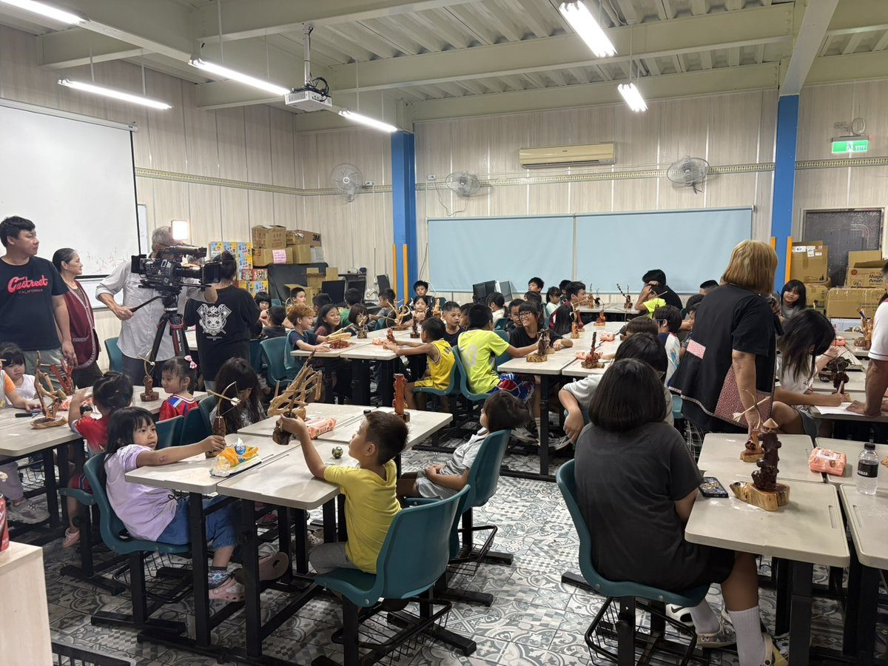

深耕秀林青春防線 新城警攜手小太陽工藝營 百名學子動手習藝反詐

可樂電子報小編/編輯
木屑飛揚的課堂裡，近百名秀林學子手持雕刻刀專注創作，新城警分局日前攜手花蓮縣秀林鄉小太陽關懷協會，在暑假尾聲舉辦暑期工藝體驗營，讓學生在太魯閣族傳統工藝與團隊競賽中，學到的不只是手藝，還有識詐防毒的判斷力。

活動由新城警分局偵查隊副隊長吳冠德率員參與，學生每五人一組分工合作，從設計、雕琢到完成作品，最後選出前三名並致贈獎品，現場氣氛熱絡，歡笑聲不斷。
警方也把握難得的聚集機會，同步實施識毒反毒、反暴力、反霸凌及反詐騙宣導，提醒學生暑假期間應從事正當休閒活動，遠離毒品、幫派與暴力行為，同時叮嚀提高網路使用及打工求職的安全意識，慎防落入詐騙與網路陷阱。
新城警分局表示，「暑期保護青少年－青春專案」自七月一日至八月三十一日實施，警方將持續結合學校、社區及民間團體辦理各項活動，透過寓教於樂強化青少年自我保護與法治觀念，讓孩子在安全、健康的環境中度過充實暑假，共同守護孩子成長。